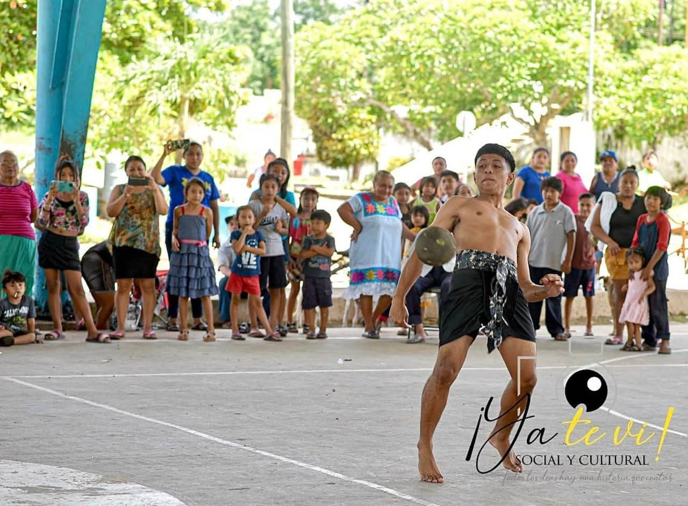

Pok Ta Pok
Pok ta pok, not just a sport, it's a legacy that players play to be connected to their ancestors. This game was played over 3,000 years ago. Players also have to prepare themself spiritually and mentally before a game because it's not like soccer or basketball, it can’t be played for 45 minutes like other sports. It is a very treacherous and hectic game. It shouldn’t be confused with Ulama (different court settings and rules), but the 2 are still generalized as the Mesoamerican hip ball game.
The painting on the players is not only for decoration, it symbolizes different ranks, gods, numbers, and differentiates the captain.